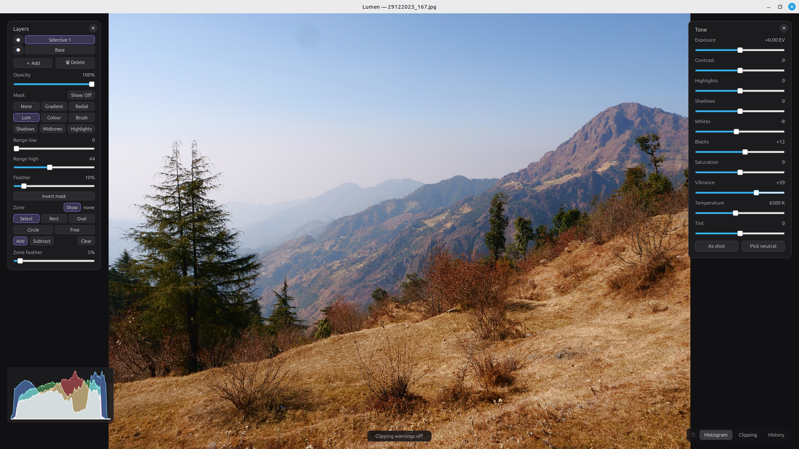

A photo editor where the image is the whole world.
A fast, non-destructive RAW and photo editor for Linux and macOS — a full tone, colour, detail, and local-adjustment pipeline, GPU-accelerated for real-time preview, with a command-palette workflow instead of a wall of panels.

Keyboard to navigate and command; pointer to manipulate.
Most editors bury your photo under panels, toolbars, and palettes. Lumen inverts that. It is modal, like an editor should be: you live in Browse mode — zoom, pan, toggle before/after — and drop into a tool only for as long as you need it. Press /, type a few letters of what you want, and go.
| / | Command palette |
| Ctrl+O · Ctrl+Shift+O | Open image · open project |
| Ctrl+S | Save project |
| Ctrl+Z · Ctrl+Shift+Z | Undo · redo |
| Ctrl+Shift+C · Ctrl+Shift+V | Copy · paste settings |
| Ctrl+0 · F11 | Reset view · fullscreen |
A genuine, non-destructive imaging pipeline. RAW files are demosaiced at 16 bits and carried through a floating-point working space; every edit is a re-orderable node in an edit graph; the full-resolution result is rendered by libvips while your interactive preview runs on the GPU.
C++20 and Qt 6.7+, rendering through Qt RHI — Metal on macOS, Vulkan/OpenGL on Linux — with GLSL shaders that replicate the pointwise pipeline.
libvips drives the full-resolution, memory-efficient pipeline and export; LibRaw decodes RAW; lcms2 handles wide-gamut colour management.
A UI-free lumen_core library — image pipeline, edit graph, layers, serialization — sits beneath the Qt front-end, so the imaging code is independently unit-tested.
Released under the Apache License 2.0. Build from source in one command, or grab a self-contained release for your platform.
Want to know exactly what happens between a photon and a JPEG — the pipeline Lumen runs for real? The Long Way from Light to JPEG builds the whole thing from scratch in plain Python, one stage at a time: sensor noise, demosaicing, white balance, colour, tone, detail, and a from-scratch JPEG encoder — each with working code and results measured against ground truth.
The quickest way to run Lumen — no compiler, no dependencies, no terminal required. Grab the latest self-contained build for your platform; Qt and the imaging libraries are bundled in.
Download Lumen-x86_64.AppImage from the releases page, then make it executable and run it.
chmod +x Lumen-x86_64.AppImage
./Lumen-x86_64.AppImageDownload Lumen.dmg, open it, and drag Lumen to Applications. On first launch, right-click the app and choose Open to get past Gatekeeper — the build is not yet notarised.
Prefer to build it yourself? Clone the repo and run ./install.sh — it installs the imaging libraries and Qt 6.7+, then builds and installs Lumen. Full instructions on GitHub.